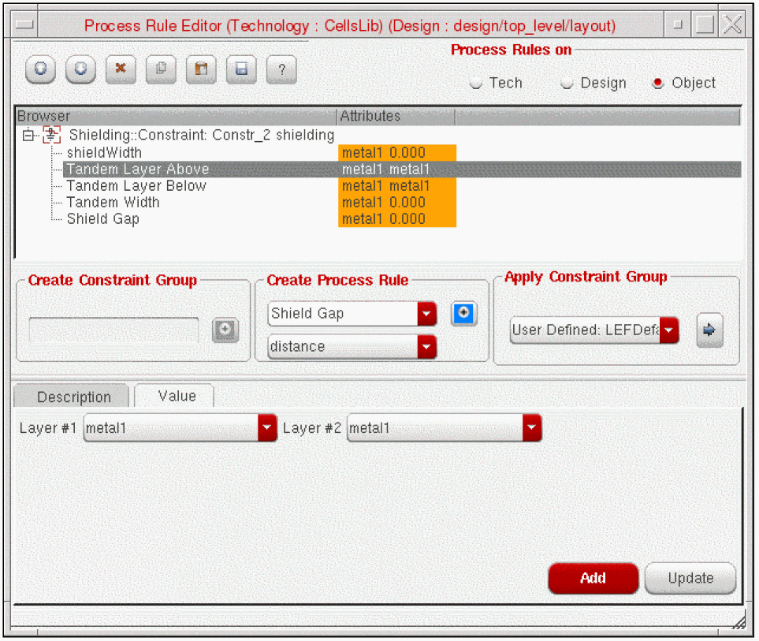

8
Specialty Routing
- Creating Constraints With the Constraint Manager
- Symmetry Routing
- Differential Pair Routing
- Shield Routing
- Matched Length Routing
Creating Constraints With the Constraint Manager
Constraints can be created in the schematic or layout view. For information about how to create constraints see
When creating a constraint in the schematic view, the constraint can be transferred to the layout view automatically or manually. See
The Create Wire command does not support retroactive application of constraints (for example, shielding, symmetry, differential pair) after the first digitized point.
For constraints to be applied properly, a net name must be provided at the first digitized point. The net name can be supplied at the first click by clicking on a shape stamped with the net name or by entering the name of the net in the Create Wire form before the first click.
Symmetry Routing
When routing a self-symmetric net, enable Snap to Pin Origin in the Create Wire form if you start the route from the pin on the symmetry axis. Otherwise, you may get two wires routing out from the pin.
- Types of Symmetry Routing
- Defining a Symmetry Constraint
- Automatic Symmetry Routing
- Differential Pair Routing
Types of Symmetry Routing
-
Mirrored Symmetry
Mirrored symmetry involves two nets mirrored over an axis. For a mirror symmetry constraint, the axis coordinate value must be determined by calculating the center coordinate between the two symmetric pins. When routing nets with mirror symmetry, ensure the axisLocation parameter is set to Fixed.
-
Self Symmetry
Self Symmetry involves a single net that is mirrored over an axis. The entire geometry can reside on the symmetry line, in which case there are no symmetric objects. For a self symmetry constraint, the axis coordinate value is the center of the self symmetry pin.
-
Cross Symmetry
Cross symmetry involves two nets that are allowed to cross the symmetry line using one or more instances of crossover cells. This type of symmetry is comparable to two separate cases of mirror symmetry involving two pairs of nets which are part of the original nets.
Crossover cells are created automatically by the Analog Placer when a need for such a cell is detected. This happens when IO pins and instTerms associated with the symmetric net pair are placed such that a crossover can not be avoided.
-
Partial Symmetry
Partial symmetry can apply to nets that are mirrored symmetric, self symmetric, or cross symmetric. Two nets that do not have the same number of terminals are considered partially symmetric. Partial symmetry also applies when a portion of the wires are unique on either side of the axis.
Checks are not implemented to determine if every geometry in a symmetric net has a symmetric counterpart. Also, checks are not implemented as to whether corresponding pieces of geometry are symmetric.
An asymmetric geometry in a symmetric net may cross the symmetry line or reside on the opposite side of the line because there are no symmetric counterparts to cause conflict.
The parts of a net that have symmetric counterparts can be connected with symmetric wiring. The parts that are unique to one side of the symmetry line must be connected with wiring that is not symmetric, as shown in the graphic below. To route an extra terminal, specify the specialty routing constraints in the Constraint Aware Editing mode.
Defining a Symmetry Constraint
The following steps describe how to create a basic symmetry constraint in the layout view.
These instructions assume that there is a schematic view or connectivity source associated with the layout view.
-
From the layout cellview, select Window – Assistants – Constraint Manager.
The Constraint Manager assistant opens. -
From the layout cellview, select Window – Assistants – Navigator.
The Navigator assistant opens. -
From the Navigator assistant, select one net or pin for self symmetry routing, or two nets or pins for mirrored symmetrical routing.
For mirrored symmetry, select the second net by pressing theControlkey and clicking on the net or pin name. See Types of Symmetry Routing for a description of mirrored and self symmetry constraints. -
In the Constraint Manager assistant, left click the arrow next to the Constraint Generator icon and select Routing – Symmetry from the pop-up window.
A symmetry constraint with default values is created. -
You can confirm the members of the constraint by hovering the cursor over the Symmetry constraint in the Constraint Manager window.
-
In the lower section of the Constraint Manager window you will see the default symmetry constraint.
-
Click the + sign next to Axis to update the default constraint values.
- Specify the axis direction for the constraint; horizontal or vertical.
- Set the axis Location to fixed.
-
Specify the axis coordinate parameters for the constraint. If you are not using the automatic placer then you should explicitly set the axis value. This is because the default value is typically incorrect for most designs.The steps 7(b) and 7(c) are required only if user wants to specify an axis that is not the default, which runs through the center line of the prBoundary.For a mirrored symmetric constraint, the axis coordinate value must be determined by calculating the center coordinate between the two symmetric pins.
For a self symmetry constraint, the axis coordinate value is the center of the self symmetry pin.
- In order to interactively/assisted wire edit a partially symmetric net, you need to first route the symmetric shapes and then turn OFF the Constraint Aware Editing mode to complete the asymmetric shapes.The order of routing the symmetric shapes before the asymmetric shapes is important.
Automatic Symmetry Routing
When using automatic symmetry routing, it is important that your axis coordinate be correct. In addition, the surrounding shapes, such as instances, must be symmetrical.
Use the Detailed run mode to route symmetry constraints with the automatic router. Symmetry constraints are not supported in the global, local, conduit, and power routers.
Be aware that the Display Levels settings start and stop control hierarchy depth for automatic routing.
See Defining a Symmetry Constraint for information about how to create a symmetry constraint.
Differential Pair Routing
Defining a Differential Pair Constraint
Before defining a differential pair constraint for a pair of nets, consider the topological relationship between the pins and existing wires and ensure that they meet the following requirements of differential pair routing:
- Pins must come in pairs
- The shape and appearance of pin pairs should be similar
- If there are pre-routed wires, these wires should be laid out in a pairing pattern. Also, corresponding segments must be laid out in the same layer.
If the nets do not meet the above set of requirements but you still want the nets to travel together as much as possible, then you should create a bus constraint for the nets.
The following steps describe how to create a basic differential pair constraint in the layout view.
These instructions assume that there is a schematic view or connectivity source associated with the layout view.
-
From the layout cellview, select Window – Assistants – Constraint Manager.
The Constraint Manager assistant opens. -
From the layout cellview, select Window – Assistants – Navigator.
The Navigator assistant opens. -
From the Navigator assistant, select two nets for the differential pair.
Select the second net by pressing theControlkey and clicking on the net name.
Only nets are allowed as members of Diff Pair constraints. -
In the Constraint Manager assistant, left click the arrow next to the Constraint Generator icon and select Routing – Diff Pair from the pop-up window.
A differential pair constraint with default values is created.
A Diff Pair constraint with default values is created. The Diff Pair constraint appears in the constraint browser tree under Type. -
You can confirm the members of the constraint by hovering the cursor over the Diff Pair constraint in the Constraint Manager window.
Changing Diff Pair Values in the Process Rules Editor
Once a Diff Pair constraint is defined you can optionally assign additional attributes in the Process Rule Editor.
-
Select the diff pair constraint In the Constraint Manager window and click the Process Rules Editor icon.
The Process Rule Editor form opens and the diff pair constraint is displayed in the browser window.
-
In the Create Process Rule field, select the type of rules and attributes you want to override or set. For example,
- To change the Minimum Spacing Same Layer for a diff pair,
-
Select Within Group::Constraint: Constr_Name.
- Select Minimum Spacing Same Layer from the Create Process Rule cycle field.
- Click the (+) button next to the Create Process Rule Cyclic field. This adds the rule below the Within Group::Constraint: Constr_Name.
- Select the Minimum Spacing Same Layer process rule and in the Value tab, select the layer of the pair from the Layer field.
- In the minSpacing field, specify the minimum spacing for the pair.
-
Click the Update button at the bottom of the form.
The value of Diff Pair is updated in the Browser window as shown in the following figure.
- When you are done setting attributes, click the Close (X) button.
Shield Routing
In order for shield routing to perform properly, the “shield” net must have a Signal Type of either “power” or “ground”. If not previously defined, you can change the default Signal Type (signal) of a net in the Property Editor.
- Defining Shield Constraints
- Shield Styles
- Default Shielding Types
- Changing Custom Shielding Values in the Process Rules Editor
- Tying Shield Wires
- Pin Escape Methods
Defining Shield Constraints
When defining a shielding constraint, the order in which you select two nets is important since it is order dependent. In the Navigator, first select the shield net, followed by the net to be shielded.
The following instructions assume that there is a schematic view or connectivity source associated with the layout view.
-
From the layout cellview, select Window – Assistants – Constraint Manager.
The Constraint Manager assistant opens. -
From the layout cellview, select Window – Assistants – Navigator.
The Navigator assistant opens. - In the Navigator assistant, select a net by clicking on the net name.
-
With the net selected, create the shield constraint by selecting Routing – Shielding from the Constraint Manager pull-down menu.
A shielding constraint is created. The Shielding constraint appears in the constraint browser tree under Type.
-
In the lower section of the Constraint Manager window you will see the parameters of shielding constraint.
- For information about the attributes used to create different types of shield constraints, see Shield Styles.
- For information about how to generate default shielding constraints, see Default Shielding Types.
-
For information about how to change values in the Process Rules Editor, see Changing Custom Shielding Values in the Process Rules Editor. You can even change values using the Constraint Manager.When pushing wires where there are shielded wires, it is possible that the shielded unit will be broken apart by the push operation. To avoid pushing apart shielded units, lock the shielded unit (both shielded and shielding wires) using the Lock Navigator Nets command.
Shield Styles
Once a Shielding constraint is defined you may electively assign additional attributes in the Process Rule Editor. There are three types of shielding styles available depending on which attributes you choose to set in the Process Rule Editor.
-
Parallel
Without adding any additional attributes in the Process Rule Editor, the default shield type is a basic parallel shield with a shieldGap equal to the applicable layer’sminSpacingand parallel shieldWidth equal to the applicable layer’sminWidth.
The default values for shieldGap and shieldWidth are not displayed in the Process Rule Editor. Once the default value is overridden with different values, they are displayed as an attribute. -
Tandem
A tandem shield (metal above and/or below shield net) can be created by setting the tandemLayerAbove and/or tandemLayerBelow attributes along with the tandemWidth attribute in the Process Rule Editor. -
Coaxial
A coaxial shield is the combination of a parallel and tandem shield (metal above and/or below the shield net along with same layer shielding along side the shielded net).
Default Shielding Types
Default shield types of parallel, tandem, and coaxial can be generated based on rule values set in the technology file.
To generate and modify default shielding constraints, follow these steps.
- Select the Shielding constraint in the In the Constraint Manager constraint browser tree under Type.
-
In the lower Constraint Manager parameters window, click the Shielding pull-down window and select the desired type of shielding constraint.
The Generate label indicates that the predefined constraint group that has not yet been generated for the selected shielding constraint.
- Open the Process Rules Editor to view or change the default values.
-
The default values are displayed for each type of shielding constraint that has been defined.
 -
To edit values, click the Design button in the Process Rules Editor.

-
You can edit the constraint group values directly or use the copy and paste functions to make the predefined constraint group more specific for your design.
Once a shielding type has been selected and applied, you can change the constraint type by clicking on the constraint in the Constraint Manager constraint browser tree under Type. Click the Shielding pull-down window and select a different type of shielding constraint to be applied.
Changing Custom Shielding Values in the Process Rules Editor
Once a Shielding constraint is defined you can assign attributes in the Process Rule Editor.
To set or change the shielding style and values,
-
Select the shielding constraint In the Constraint Manager window and click the Process Rules Editor icon.
The Process Rule Editor form opens and the shielding constraint is displayed in the browser window.
-
In the Create Process Rule field, select the type of rules and attributes you want to override or set. For example,
- To change the shieldGap for a parallel shield, select shieldGap from the Create Process Rule cycle field.
- Leave distance as the value and click the blue + button to add the attribute to the shield constraint.
- From the Layer field, select the layer of the shield.
- From the minSpacing field, select the gap spacing for the shield.
-
Click the Update button at the bottom of the form.
The value of shieldGap is updated in the Browser window.
-
When you are done setting attributes, click the Close (X) button.
For information about what values to set to create different types of shielding constraints, see Shield Styles.
If you have many nets in your design that require shielding, you can optionally create a shielding constraint group in the technology file and apply the shielding constraint group, using the process rules editor, to the nets requiring the same set of constraints. See Applying a Constraint Group for more information.
To remove or copy attributes of a shielding constraint in the Process Rules Editor, click the right mouse button over the attribute to bring up the context sensitive form.
For more information about how to copy constraints, see Copying an Existing Process Rule.
Tying Shield Wires
Shield nets are not tied into power/ground by default. Once shield routing (automatic or manual routing) is complete, use the Power Router – Via options to add vias and wires to tie in the shields.
The Create – Wire command does not tie shield nets to shield wires in the design. To tie shield wires to shield nets, use the Power Router – Tie Shield option.
Pin Escape Methods
The router models a net with shielding as having a wide spacing requirement, as it takes the widths of the shields into account. When the router tries to escape from a pin, wide spacing is required if you do not specify a taper constraint group. If the neighboring pins have tighter spacing than is required by the shielded net, minimum spacing for example, the router has trouble escaping from the pin based on the default behavior of needing the wider spacing clearance.
To work around this default behavior, define a taper constraint group with a different name than the default constraint group used by the wire. The router will then use the spacing specified in the taper constraint group for pin escape rather than the wide spacing of the shielded net.
The following is an example of a taper constraint group.
constraintGroups(
;( group [override] )
;( ----- ---------- )
( "virtuosoDefaultTaper" nil "taper"
interconnect(
( validLayers (Poly Metal1 ) )
( validVias (M1_PO ) )
) ;interconnect
spacings(
( taperHalo 1.4 )
) ;spacings
) ;virtuosoDefaultTaper
) ;constraintGroups
Use the Technology File Manager to load the constraint group.
Matched Length Routing
Defining a Matched Length Constraint
The following steps describe how to create a basic matched length constraint in the layout view.
These instructions assume that there is a schematic view or connectivity source associated with the layout view.
-
From the layout cellview, select Window – Assistants – Constraint Manager.
The Constraint Manager assistant opens. -
From the layout cellview, select Window – Assistants – Navigator.
The Navigator assistant opens. - From the Navigator assistant, click a net name to select the net.
-
With the net selected, choose Routing - Matched Length from the Constraint Manager pull-down menu to create the matched length constraint.
A matched length constraint with default values is created. -
Hover the cursor over the Matched Length constraint in the Constraint Manager window to confirm the members of the constraint.
-
In the lower section of the Constraint Manager window you will see the default matched length constraint.
-
Click the plus(+) sign next to the Within Group parameter. It displays the matchTolerance and Tolerance parameters.
-
matchTolerance
(Applies only for net groups of type net_match) Errors are reported on nets that are shorter than the longest net of the group minus thematchTolerance. Lengths are based on the net's routes. If bothmatchToleranceandToleranceare set,matchToleranceis used. However, for interoperability, you should only useTolerance, notmatchTolerance. The default setting is two times the pitch or four times the gap space is used for the tolerance. The default value of this parameter in the Constraint Manager is0. -
Tolerance
(Applies only for net groups of type net_match) Errors are reported on nets that are shorter than the longest net of the group minus theTolerancepercentage. Lengths are based on the net's routes. If bothmatchToleranceandToleranceare set,Toleranceis ignored. However, for interoperability, you should only use Tolerance, notmatchTolerance. The default setting is two times the pitch or four times the gap space is used for thetolerance.
For example, ifToleranceis 10, or 10%, and the longest net is 20 microns, then a net length of 18.2 microns would be acceptable because it is greater than the longest net minus 10% of 20 (2 microns). A net length less than 18 microns would fail. The default value of this parameter in the Contraint Manager is 20.
-
matchTolerance
You can now directly change the parameters of the Match Length constraint using the Constraint Manager. For more information on Match Length constraint and its parameters, refer to
For information about how to change values in the Process Rules Editor, see Changing Matched Length Values in the Process Rules Editor.
Changing Matched Length Values in the Process Rules Editor
Once a Matched Length constraint is defined you can optionally assign additional attributes in the Process Rule Editor.
-
Select the Matched Length constraint In the Constraint Manager window and click the Process Rules Editor icon.
The Process Rule Editor form opens and the Matched Length constraint is displayed in the browser window.
-
In the Create Process Rule field, select the type of rules and attributes you want to override or set. For example,
- To change the Match Tolerance for a matched length constraint,
-
Select Within Group::Constraint: Constr_Name.
- Select Match Tolerance from the Create Process Rule cycle field.
- Click the (+) button next to the Create Process Rule Cyclic field. This adds the rule below the Within Group::Constraint: Constr_Name.
- Select the Match Tolerance process rule and in the Value tab, specify the value in the matchTolerance field.
-
Click the Update button at the bottom of the form.
The value of Match Tolerance is updated in the Browser window as shown in the following figure.
- When you are done setting attributes, click the Close (X) button.
Return to top